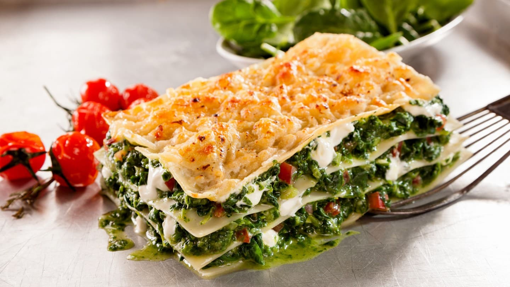
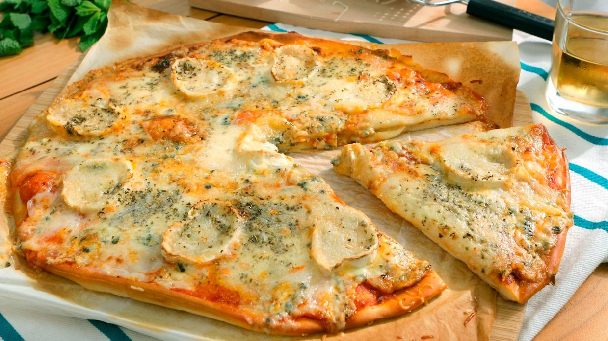
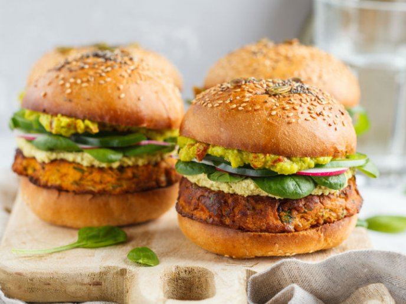
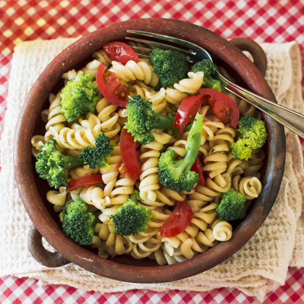

| LASAÑA | Pasta sin gluten con verduras de la estación, soja texturizada, bechamel y salsa de tomate. Gratinado al horno. |  |
|---|---|---|
| PIZZA CUATRO ESTACIONES | Pimiento, cebolla, salchichas vegetales, champiñones, espárragos y queso | |
| PIZZA CUATRO QUESOS | Gorgonzola, Parmesano, Mozzarella y Manchego. |  |
| HAMBURGUESA LIBANESA | Escalopes de remolacha, cebolla y copos de maíz con salsa guacamole, lechuga y tomate. Con o sin queso. |  |
| FUSILLI | Salsa a elegir: boloñesa de soja o pesto |  |